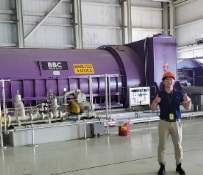
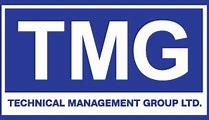

These are the companies I've had the pleasure to work with, developing my experience and skills.

During my internship at Ontario Power Generation, I played a crucial role in enhancing efficiency and streamlining processes across multiple departments. By simultaneously supporting both Project Controls and Fuel Handling, I contributed to significant operational improvements and was honored with three ViA employee recognition awards for my efforts.
One of my key achievements was automating monthly forecasting reports for all Darlington Nuclear Projects, resulting in a remarkable time savings of 89 hours per month. This automation not only boosted productivity but also allowed the team to focus on higher-value tasks.
In addition, I led the relay replacement field operation, where I collaborated closely with project stakeholders to troubleshoot and resolve issues within the electrical schematic. Our teamwork and proactive problem-solving enabled us to complete the project four days ahead of schedule, showcasing our commitment to excellence and timely project delivery.
 In my role, I delivered impactful results through strategic risk management and operational improvements. One of my key accomplishments was conducting a Monte Carlo risk assessment on a client's brine management system, achieving an 85% confidence level. This assessment led to a comprehensive risk mitigation plan that saved the client $4.41 million—a 72% cost reduction from the original strategy.
I also developed critical standard operating procedures, scopes of work, and requests for proposals tailored for client mine sites, ensuring efficiency and compliance across operations.
Additionally, I created a sophisticated multi-level filter and ranking process to analyze all mining companies listed on the TSX Venture Exchange. This analysis was presented to the leadership team, resulting in the acquisition of 3 new clients and the strategic pursuit of 7 additional companies, significantly expanding our client base.
I was a project manager all throughout my 3rd year as a project manager in the first year Engineering Practice course (APSC 101 & 103) in addition, I instructed the second-year Electronic Circuits and Motors for Mechatronics class (MECH 210) leading labs, tutorials, and office hours. I facilitated client meetings and team discussions to maximize workflow and team dynamics.
Recipient of over $1500 to work in interdisciplinary teams to solve challenges for small businesses in 7 weeks. Worked with company founders from Venturous Counselling & Consulting, EIM Technology, Rentrii, Vision2Reality Foundation gaining valuable entrepreneurship experience. These founders have acted as phenomenal mentors still to this day.